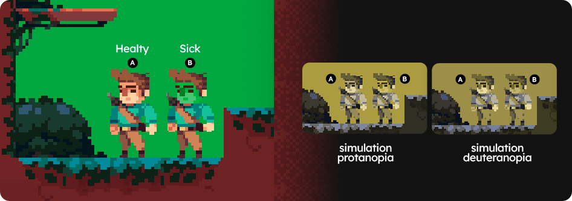

8. Use the simulations to strategically plan the focus of research with players with color blindness
[2] Fortes, Renata Pontin M., et al. "Game accessibility evaluation methods: A literature survey." Universal Access in Human–Computer Interaction. Design and Development Approaches and Methods: 11th International Conference, UAHCI 2017, Held as Part of HCI International 2017, Vancouver, BC, Canada, July 9–14, 2017, Proceedings, Part I 11. Springer International Publishing, 2017.
User research alone costs a lot of time and resources for a project [1]. When considering a more restricted profile (participants with different types of color blindness), the challenges and costs can be even greater. Therefore, it is important that research with players with color blindness is strategically planned, aiming to make the best use of the resources spent.
The analyzes carried out using simulations and guidelines in stages prior to player testing can be used to guide the planning of the method to be used. The literature indicates that it is most common to use traditional approaches such as usage observation and interviews [2], which can be adapted to focus on color accessibility.
PROBLEM SCENARIO
You and your team would like to involve players with color blindness in every step of the process of creating your game, but you only have resources to conduct one (maximum two) player assessments. Therefore, you feel pressured to make the most of the opportunity to receive feedback from these players. However, you don't know exactly what to look for, what to ask and how to handle this moment.
8.1. Let the participant explore freely at first
As much as color blindness simulations help identify relevant color accessibility problems in games, the life experience of people with color blindness is essential for creating games that truly meet the needs of this group. Therefore, in a user research context, it is recommended to seek to identify their main complaints and priorities.
One possibility to identify this information is to initially let players freely explore the game interface, using the Think Aloud protocol [3]. This is the perfect time to observe which problems are most noticed by participants and which areas of the game participants have the most difficulty with.
Our studies demonstrate that players with color blindness commonly (90% of experiment participants) identify new accessibility problems that had not yet been identified by developers using color blindness simulations.
After this initial exploration, it is possible to follow a protocol with tasks to clarify points about previously identified problems or specific areas of the game, as guided in recommendation 8.3.
8.2. Look for issues that may be invisible to players with color blindness
Our sutdies demonstrate that some problems may not be identified in tests with players with color blindness because they are completely invisible to this group of people. How can a player help you identify a problem in something they don't know exists? However, the lack of visualization of certain elements may be damaging to the experience of the player with color blindness and even compromising the understanding of the game's mechanics.
In the image bellow, two states of the main character of the game used in the experiment can be seen: healthy (A) and sick (B). The sick state happens when the player collects a rotten fruit and, in addition to the greenish face (visual feedback), this state also slows the character for 2 seconds. Only 1 participant with color blindness in the experiment indicated this lack of visualization as a problem. However, most colorblind players were not able to see the visual feedback and therefore took longer to understand the rotten fruit mechanics. Some were confused in the post-test interview and even related the slow effect to non-existent causes such as “mud on the ground”.
Therefore, it is advantageous that these areas that have the potential to be invisible to color-blind players are identified in advance and are worked on carefully in research with these users.
8.3. Use pain points identified with simulations as talking points
To carry out strategic research with colorblind players, preparation and planning are necessary. Previous analyzes carried out with guidelines and color blindness simulations can serve as shortcuts so that discussions with players with color blindness bring few surprises and are more focused on problem-solving proposals than on identifying new problems. Remember that discovering color accessibility issues in advanced stages of game development can be very costly for the budget and the design and development team, especially in smaller studios.
Despite the advantages of letting players freely explore the evaluated game (see recommendation 8.1), it is important to guide them to problem areas previously identified with color blindness simulations, especially in case of problems that may be invisible to this group. To do this, it is recommended to indicate tasks for players to perform within the game. This will make the assessment more objective and ensure that participants evaluate all the points listed as objectives.
The same applies to interviews. In an experiment, it was noticed that more specific questions, about specific areas and actions of the game, can encourage discussions and propositions of richer solutions than more comprehensive questions. These questions can be based both on areas previously identified with the help of simulations and also on observations made by researchers during the participant's interaction with the game. Therefore, a semi-structured interview protocol* is the ideal alternative for this type of assessment. It is important to always pay attention to the way the questions are asked, so as not to influence the participant's response. Check out some examples:
- Goal: to identify whether the participant was able to perceive visual feedback. Question: Can you describe what happens to the character when you collect a rotten fruit?
- Goal: to detail a problem noticed during usage observation. Question: Can you tell me what happened in this part of the game? How did you figure out how to get past that hurdle?
- Goal: to encourage the proposition of solutions. Question: What would improve your experience in this situation?
USE SCENARIO
You and your team are planning to evaluate a prototype of the game you are creating with players with color blindness. Previously, you have already carried out internal assessments using color blindness simulations and guidelines. Proposals to solve or minimize the identified problems have already been integrated into the prototype that will be evaluated with the players. You use the DECIDE framework [4] to plan the evaluation and divide the sessions into two stages: observation of use and semi-structured interview. During usage observation, you guide participants to play the game freely for a pre-determined time and using the Think Aloud protocol [3]. After this initial exploration, you propose some tasks based on the problems previously identified with the color blindness simulations. Then, in the semi-structured interview, you start with broad questions (e.g.: how was the experience?), to make the participant more comfortable and identify general perceptions, and follow with questions about specific areas and problems of the interface (problem-based previously identified with simulations or in observations made while the participant played in the previous stage). During interviews, you always seek to encourage the participant to propose solutions to the problems identified. After applying all the tests, you and your team compile the results and prioritize the changes that should be made to the game based on the data collected.
TIPS
- Use a review planning framework, especially if you don't have much experience with user research. For this you can use the DECIDE framework [4].
- Be careful when mentioning problems identified with simulations before participants have commented on them. The ideal is to point out the area and wait for the participant to mention the problem. If this doesn't happen and you still want to discuss the subject, point out the problem as a question (e.g.: what do you think of this element? Did you think you had any difficulty seeing it?)
- Conduct an internal pilot test with the aim of testing the questions and the average time it will take to conduct the assessment.
- While conducting the assessment, encourage players with color blindness to propose solutions to identified problems. Their perspective is very important for creating a game that considers chromatic accessibility.
- Use the data collected to prioritize identified problems. In cases where not all issues can be resolved, the opinions of assessment participants can help the team define which issues, if resolved, will have the greatest positive impact on the experience of players with color blindness.
WHAT NOT TO DO
- Be careful not to sound ableist. Remember that the correct term to use is Person with Disability (PWD) or, more specifically, Person with Color Blindness. Disabilities are not something you “have” or “carry”, it is an existential condition of the person. You can read more about ableism here.
- Do not influence participants' opinions with biased or confusing questions. Avoid denials in questions.
- Do not ask closed questions that allow participants to answer with yes or no. More open-ended questions can bring greater depth to player comments.